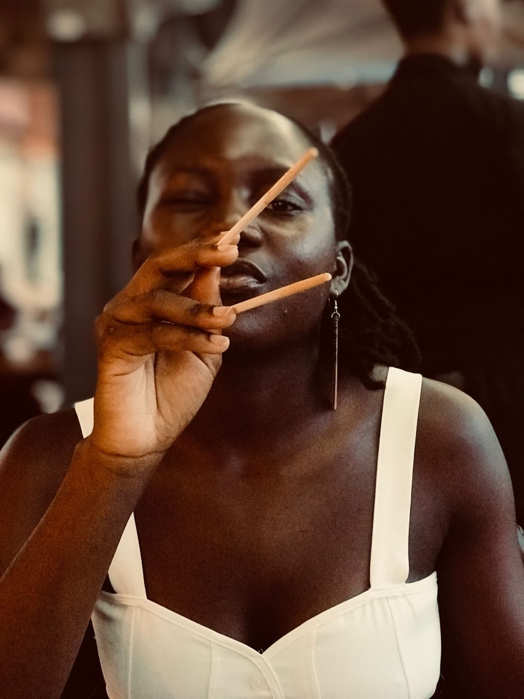

— new work, 2026
Someone's Home, A Perfect Sky
Welcome to Nachie's virtual gallery — photography from Southern Africa, where the ordinary is made extraordinary, one frame at a time.

01 — The Artist
Nachilima
Photographer based in Livingstone, Zambia — right next to Victoria Falls. I studied Commerce in Delhi, came back home, and picked up a camera. What I found was already there: the light at the end of the day, the girl weaving baskets in the shade, the kind of sky you can't make up.
“I capture the things I’m afraid I’ll forget.”
More about Nachi →02 — Works
New Arrivals

Lady
Digital Photography, 2025
Inquire

Someone's Home
Digital Photography, 2025
Inquire

I'll Leave the Light On
Digital Photography, 2026
Inquire

03 — In Her Words
A space where
silence speaks.
I grew up in Livingstone — the town built next to one of the most powerful waterfalls on earth. There's something about living alongside that scale of beauty that teaches you to look more carefully at the smaller things: a rusted door, an afternoon shadow, the way a woman holds her basket.
I studied commerce in Delhi. I came back home and traded spreadsheets for a camera. This site is where I put the things I see — a record of the ordinary life I don't want to forget.